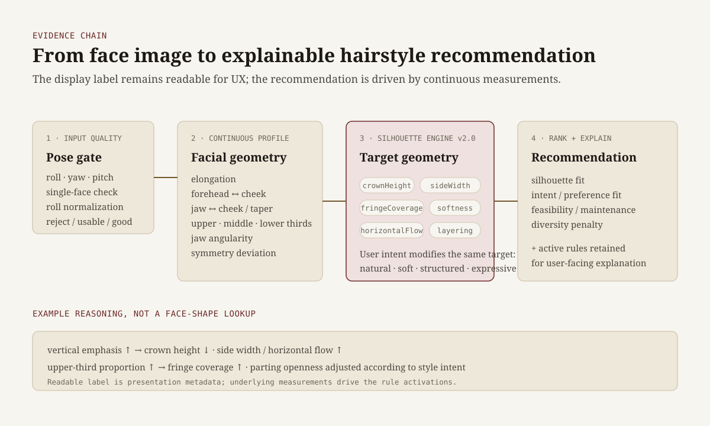

TetoEgen — Building a Multi-Vertical Product Around Explicit Evidence
A deployed consumer product family spanning face analysis, animal-face classification, geometry-driven hairstyle recommendation, and an attachment-style questionnaire. The core engineering decision was to give each vertical the inference method and evidence standard its claim required.
The four experiences share a web product shell, but not an artificial common “AI” layer. A similar UX does not justify a similar model.
1. Replacing face-shape labels with measurable geometry
A categorical recommender can map “round” or “oblong” to a fixed hairstyle list. Instead, I based recommendations on the measurements behind the label: facial elongation, forehead/cheek/jaw proportions, facial thirds, jaw angularity, symmetry, and vertical/horizontal emphasis.
Pose quality is checked before those measurements are trusted. Roll can be normalized; excessive yaw or pitch lowers confidence or rejects the input. Jaw geometry is derived from contour segments and direction changes rather than a single landmark.
Continuous features are converted into target hairstyle geometry: crown height, horizontal flow, fringe coverage, and movement. User intent — natural, soft, structured, or expressive — modifies the same target. Versioned rules record which adjustments fired, so the result remains inspectable.

Keep the readable face-shape label for UX; let the recommendation depend on measurements that can be inspected and tested.
2. Treating the dataset as part of the product
For the animal-face classifier, the main risk was not producing a probability vector. It was whether the dataset made that probability meaningful.
The local collection and review pipeline:
- discovers candidate images and sources,
- detects/crops faces under product-matched assumptions,
- requires explicit human acceptance or rejection,
- records source and transformation lineage,
- splits train/validation/test by person identity,
- balances classes without altering reviewed originals.
Identity-disjoint splits matter because different photos of the same celebrity across training and validation can inflate metrics through person recognition rather than category generalization.
The collector also rejects crops requiring artificial padding or excessive upscaling, records fallback-thumbnail use, and keeps every record marked for rights review rather than treating public discoverability as permission.
3. Making failure boundaries explicit
I treated failure states as part of the product contract, not edge cases hidden behind a successful demo.
- validate input quality before trusting face-derived measurements,
- surface explicit states for multiple-face and low-quality inputs,
- treat model metadata and runtime output shape as contracts,
- expose which recommendation rules produced the result,
- isolate analytics so telemetry failure cannot block the user flow.
High-sensitivity inputs stay out of normal funnel telemetry: observability should support product decisions without becoming indiscriminate collection.
4. The review frame I kept
- Claim: What exactly does the product say it can do?
- Mechanism: What actually produces the result?
- Evidence: What test separates capability from a convincing happy path?
- Failure boundary: When should confidence fall or input be rejected?
- Decision: What blocks release, and what is only technical debt?
What I would evaluate differently now
- Hairstyle: calibrate geometric thresholds and rule strengths against a labeled reference set before adding more hand-tuned rules.
- Animal-face: keep a fixed identity-disjoint evaluation set and report per-class precision/recall and confusion matrices before interpreting confidence.
- Consumer perception: measure entertainment value, perceived plausibility, and predictive correctness separately.
- New verticals: require each one to justify its own inference mechanism and measurement plan.
Outcome
TetoEgen became a deployed multi-vertical product spanning computer-vision preprocessing, reviewed ML data collection, explainable recommendation logic, typed analytics, and production web engineering.
The lasting distinction is simple: generating an output is not the same as supporting the product claim with evidence.
Stack: Next.js, TypeScript, TensorFlow.js, MediaPipe, face-api.js, Playwright, GA4, Cloudflare Pages
Production:
tetoegen.kr
Source: Private repository